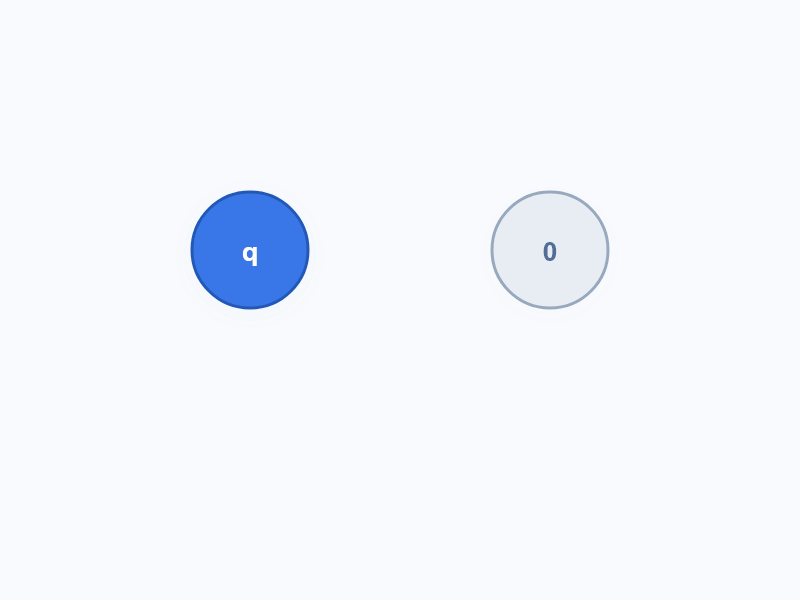

高中物理 · 选择性必修第三册
COULOMB'S LAW
第九章 静电场及其应用
第2节
库仑定律
电荷间相互作用的定量规律
+
F = k |q₁q₂| / r²
01 / 10
问题与思考
定性探究
EXPERIMENT
电荷间的作用力取决于什么？
QUESTION 01
电荷间的
作用力
与它们之间的
距离
有什么关系？
QUESTION 02
电荷间的
作用力
与它们所带的
电荷量
有什么关系？
实验现象：
距离越近，作用力越大；
电荷量越大，作用力越大。
02 / 10
物理理想模型
点电荷
MODEL
忽略次要因素，抓住主要矛盾
什么情况下，可以把带电体看成一个“点”？
实际带电体
复杂形状、大小、电荷分布
q
电荷量与位置
点电荷
当带电体间的距离比它们自身的大小大得多，以致形状、大小及电荷分布的影响可以忽略时，带电体可看作点电荷。
03 / 10
科学猜想
类比万有引力
ANALOGY
电荷间的力，也遵守相似规律吗？
万有引力
F = G
m₁m₂
r²
静电力猜想
F ∝
q
1
q
2
r²
?
把“质量”替换成“电荷量”，形式是否仍然成立？
平方反比
先驱
卡文迪什、普里斯特利确信平方反比规律
突破
法国科学家库仑用扭秤实验完成定量检验
04 / 10
库仑扭秤（一）
微小力放大
TORSION
看不见的微小力，变成看得见的扭转角
结构解析
细银丝悬挂绝缘棒，A 球随棒转动；C 球靠近 A 球产生静电力。
转化放大
静电力使细银丝扭转。通过扭转角 θ，比较和测量微小的静电力。
保持电荷量不变，改变距离：
F ∝
1
r²
05 / 10
库仑扭秤（二）
平分电荷量
CHARGE
没有电荷量仪表，如何按比例改变 q？

巧妙设计
用完全相同的小球接触分电，实现电荷量按确定比例缩减。
控制变量
保持距离 r 不变，分别改变 q
1
、q
2
，观察扭转角对应的力。
保持距离不变，改变电荷量：
F ∝ q
1
q
2
06 / 10
COULOMB'S LAW
LAW
库仑定律
F = k
q
1
q
2
r²
静电力常量
k = 9.0 × 10⁹ N·m²/C²
方向
同种电荷相斥，异种电荷相吸；力沿两点电荷连线。
适用条件
① 真空中 ② 静止点电荷
07 / 10
例题 1
氢原子中的两种基本相互作用
COMPARE
在微观世界，谁占主导？
r = 5.3 × 10⁻¹¹ m
+
质子 p
−
电子 e
已知条件
qₚ = +1.6 × 10⁻¹⁹ C
qₑ = −1.6 × 10⁻¹⁹ C
mₚ = 1.67 × 10⁻²⁷ kg
mₑ = 9.1 × 10⁻³¹ kg
库仑力 F
库
≈ 8.2 × 10
−8
N
万有引力 F
引
≈ 3.6 × 10
−47
N
F
库
/ F
引
= 2.3 × 10
39
研究微观带电粒子的相互作用时，万有引力远小于库仑力，通常可以忽略不计。
08 / 10
例题 2
静电力的叠加
VECTOR
每个电荷独立作用，合力按矢量相加
+
+
+
两个或两个以上点电荷对某一点电荷的作用力，等于各点电荷单独对该点电荷作用力的矢量和。
F
合
=
F
1
+
F
2
+ ···
09 / 10
课堂小结与作业
RECAP
今天带走三件事
01
一个模型
点电荷
02
一个实验
库仑扭秤
03
一个定律
库仑定律
课后作业：课后“练习与应用”第 2、3、5 题。
+
−
F = k
|q
1
q
2
|
r²
10 / 10
↑
↓
✎
编辑模式